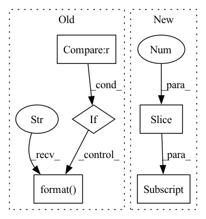

Pattern ID :4792
Before Change
step, i, event[i], (i + 1) * 128, (i + 2) * 128
)
except AssertionError:
if step > 10 :
print("Generation stopped at step {}".format( step) )
break
raise
instrument = min(128, event[0])After Change
for event in roll:
if event[0] == 130 or 129 in event[1:]:
break
if event[0] == 129 or 128 in event[1:] :
continue
if event[0] == 131 or 130 in event[1:]:
continueIn pattern: SUPERPATTERN
Frequency: 3
Non-data size: 5
Instances Fragment ID: 16935024
Project Name: rick-mccoy/reformer-pytorch
Commit Name: 3411114d22e0bfcae2e106f5c82a3211da83f409
Time: 2020-02-29
Author: rickmccoy3141@gmail.com
File Name: datasets/music.py
M Class Name: AnonimousClass
N Class Name: AnonimousClass
M Method Name: roll_to_midi(1)
N Method Name: roll_to_midi(1)
M Parent Class:
N Parent Class:
M File Name: datasets/music.py
N File Name: datasets/music.py
M Start Line: 38
M End Line: 66
N Start Line: 44
N End Line: 60
Before Change
img_str = ""
count = 0
for ind in vog_list:
if ground_truth[ind] == lab and count < 25 :
pr_label = imagenet_classes[pr[ind]][1][2:-1].split(",")[0]
img_str += "-label "{}" ./{}/weight_32000/img_{:05d}.jpg ".format( pr_label, load_path, ind)
count += 1
os.system("montage -quiet {} -tile 5x5 -geometry +0+0 -pointsize 33 ./imagenet_samples/{:03d}_{}".format(img_str, lab, out_name))
// Image indexesAfter Change
def plot_grid(score_x, vog, dataset_classes, x_gt, x_pr, label_type):
count = 0
for ind in score_x:
img_str = "-label "{:.4f}\nGT: {}\nPT: {}" ./{}/weight_32000/img_{:05d}.jpg ".format(vog[ind], dataset_classes[x_gt[ind]][1][2:-1].split(",")[0], dataset_classes[x_pr[ind]][1][2:-1] .split(",")[0], load_path, ind)
os.system("montage -quiet {} -tile 1x -geometry +0+0 -pointsize 33 ./{:03d}_{}.jpg".format(img_str, ind, label_type))
count += 1
Fragment ID: 16935014
Project Name: chirag126/vog
Commit Name: 3ee87c7f69ff5289cb7138bd3e042e91562f6490
Time: 2020-10-09
Author: chiragagarwall12@gmail.com
File Name: imagenet/train_visualize_grad.py
M Class Name: AnonimousClass
N Class Name: AnonimousClass
M Method Name: plot_grid(6)
N Method Name: plot_grid(4)
M Parent Class:
N Parent Class:
M File Name: imagenet/train_visualize_grad.py
N File Name: imagenet/train_visualize_grad.py
M Start Line: 30
M End Line: 38
N Start Line: 33
N End Line: 38
Before Change
input_device = model.input_device
args = inspect.getfullargspec(model.forward).args
args_dict = {}
if any(arg not in args for arg in required_argument):
missing = []
for arg in required_argument:
if arg not in args:
missing.append(arg)
raise RuntimeError("Model missing required argument field(s): {}, "
"check your storage functions."
.format( missing) )
for na in named_args:
for k, v in na.items():
if k in args:After Change
input_device = model.input_device
arg_spec = inspect.getfullargspec(model.forward)
// exclude self in arg_spec.args
args = arg_spec.args[1:] + arg_spec.kwonlyargs
required_args = (set(args) -
set(arg_spec.kwonlydefaults.keys()
if arg_spec.kwonlydefaults is not None Fragment ID: 16935017
Project Name: iffix/machin
Commit Name: 344fc0fd5808cb59488596fbb7e88070b0a384a3
Time: 2020-07-31
Author: hanhanmumuqq@163.com
File Name: machin/frame/algorithms/utils.py
M Class Name: AnonimousClass
N Class Name: AnonimousClass
M Method Name: safe_call(1)
N Method Name: safe_call(1)
M Parent Class:
N Parent Class:
M File Name: machin/frame/algorithms/utils.py
N File Name: machin/frame/algorithms/utils.py
M Start Line: 107
M End Line: 124
N Start Line: 74
N End Line: 145